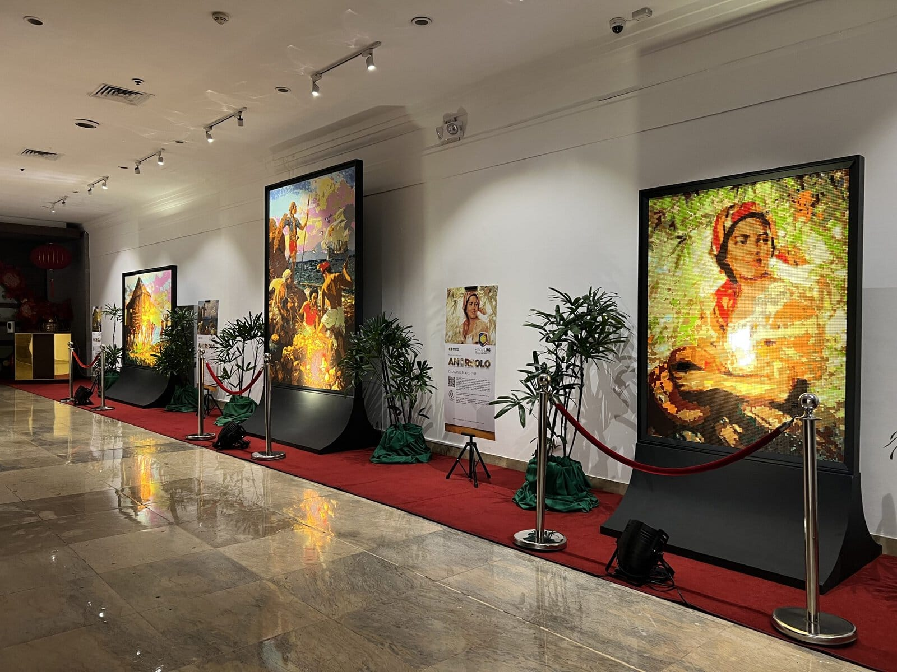

A Tribute To
Filipino Artists
A Living Archive of Filipino Artistic Excellence
'The Fruit Gatherer', Fernando Amorsolo (1950)

Paintings
Visual narratives preserved on canvas

Sculptures
Expressions of culture in three dimensions
Exhibitions
Curated showcases of artistic heritage